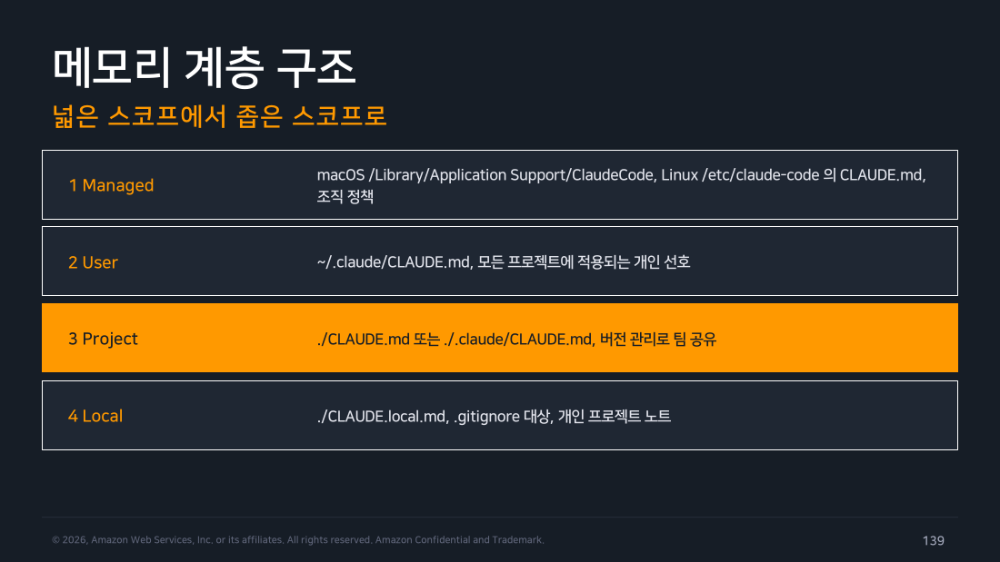
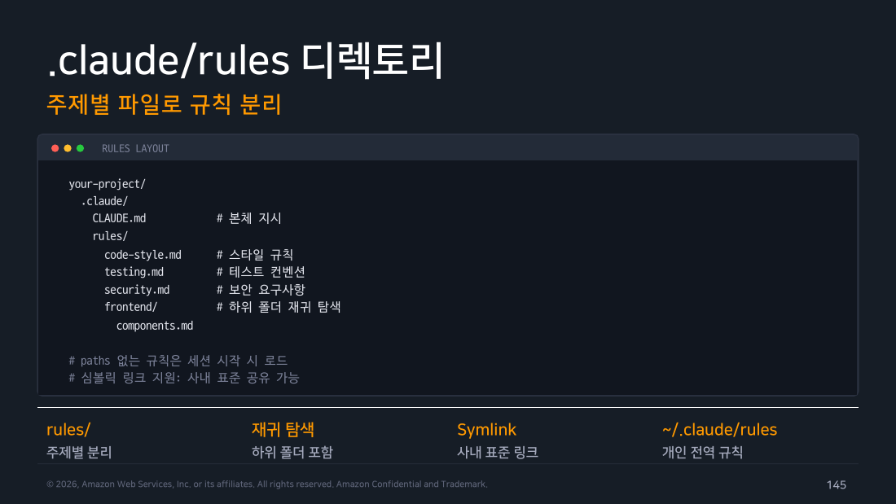

Part 8 — CLAUDE.md & Memory¶
한 줄 요약¶
지시는 CLAUDE.md에, 학습은 Auto memory에 쌓입니다. 짧고 구체적으로 유지하고, 커지면 rules와 skills로 분리합니다.
왜 알아야 하나¶
Part 2에서 이런 경고를 했습니다.
컨텍스트 한계에 접근하면 오래된 것부터 정리되므로, 초반에 준 세부 지시는 사라질 수 있습니다.
그래서 매 세션 "우리 프로젝트는 들여쓰기 2칸이야", "커밋 전에 테스트 돌려" 같은 말을 반복하게 됩니다. 이걸 한 번 적어두면 매 세션 자동으로 로드되게 하는 장치가 메모리 시스템입니다. Part 8은 Claude Code를 "쓸 만한 도구"에서 "우리 팀 도구"로 바꾸는 지점입니다.
개념 1 — 두 가지 메모리 시스템¶
메모리 시스템이 두 개인데, 둘 다 매 세션 시작 시 자동으로 로드됩니다. 차이는 딱 하나입니다. 누가 쓰는가.
flowchart TD
subgraph A ["CLAUDE.md — 내가 쓴다"]
A1["코딩 표준 · 워크플로 · 아키텍처 <b>지시</b>"]
A2["프로젝트 / 사용자 / 조직 스코프"]
A3["버전 관리로 팀과 공유"]
A4["지시가 반복되면 여기에 기록"]
end
subgraph B ["Auto memory (MEMORY.md) — Claude가 쓴다"]
B1["빌드 명령 · 디버깅 인사이트를 <b>자동 축적</b>"]
B2["저장소 단위, 워크트리 간 공유"]
B3["매 세션 첫 200줄 또는 25KB 로드"]
B4["교정할수록 알아서 똑똑해짐"]
end
S(["매 세션 시작 시<br/>둘 다 컨텍스트에 로드"])
A --> S
B --> S
style A fill:#e3f2fd,stroke:#1976d2,color:#000
style B fill:#e8f5e9,stroke:#388e3c,color:#000
style S fill:#673ab7,stroke:#4527a0,stroke-width:2px,color:#fffCLAUDE.md는 내가 씁니다. "들여쓰기는 2칸", "커밋 전에 테스트를 돌려라", "API 핸들러는 여기 둬라" 같은 지시가 들어갑니다. 버전 관리에 넣어서 팀 전체가 같은 규칙을 공유합니다.
Auto memory는 Claude가 씁니다. 작업하다 알게 된 것들이 자동으로 쌓입니다. "이 프로젝트는 빌드가 이렇게 돌더라", "저 파일은 이런 패턴이더라" 같은 발견입니다. 내가 따로 관리할 필요가 없고, 교정해줄수록 정확해집니다.
한 줄로 구분하면 이렇습니다. "내가 지켜달라고 하는 것" =
CLAUDE.md, "Claude가 알아낸 것" = Auto memory.
개념 2 — 메모리 4계층 구조¶
CLAUDE.md는 한 곳에만 있는 게 아닙니다. 넓은 범위에서 좁은 범위로 네 겹이 있고, 아래로 갈수록 더 구체적인 상황에 적용됩니다.
flowchart TD
L1["<b>① Managed — 조직 정책</b><br/>macOS: /Library/Application Support/ClaudeCode<br/>Linux: /etc/claude-code<br/>Windows: C:\\Program Files\\ClaudeCode<br/><i>관리자가 배포, 사용자가 못 바꿈</i>"]
L2["<b>② User — 개인 선호</b><br/>~/.claude/CLAUDE.md<br/><i>내 모든 프로젝트에 적용</i>"]
L3["<b>③ Project — 팀 공유</b><br/>./CLAUDE.md 또는 ./.claude/CLAUDE.md<br/><i>버전 관리에 포함, 팀 전체가 같은 규칙</i>"]
L4["<b>④ Local — 개인 메모</b><br/>./CLAUDE.local.md<br/><i>.gitignore 대상, 나만 보는 프로젝트 노트</i>"]
L1 --> L2 --> L3 --> L4
style L1 fill:#4a148c,stroke:#311b92,color:#fff
style L2 fill:#673ab7,stroke:#4527a0,color:#fff
style L3 fill:#7e57c2,stroke:#5e35b1,color:#fff
style L4 fill:#b39ddb,stroke:#7e57c2,color:#000Managed는 조직이 배포하는 정책입니다. 사용자가 임의로 바꿀 수 없습니다.
User는 내 개인 취향입니다. 어느 프로젝트에서 일하든 따라옵니다. "설명은 한국어로", "커밋 메시지는 이런 형식으로" 같은 것들이 여기 어울립니다.
Project가 실무에서 가장 많이 쓰는 계층입니다. 저장소에 커밋해서 팀 전체가 같은 규칙을 공유합니다.
Local은 .gitignore에 넣는 개인 메모입니다. "이 브랜치에서는 임시로 이렇게 해보는 중" 같은 걸 팀에 밀어넣지 않고 남길 수 있습니다.

▲ 교재 슬라이드 139 — 메모리 4계층 구조
로딩 순서와 병합¶
디렉토리 트리를 걸어 올라가며 발견한 파일을 모두 병합합니다. 덮어쓰기가 아닙니다.
# foo/bar/ 에서 claude 실행 시
/etc/claude-code/CLAUDE.md (조직)
~/.claude/CLAUDE.md (사용자)
foo/CLAUDE.md (상위)
foo/bar/CLAUDE.md (작업 디렉토리)
foo/bar/CLAUDE.local.md (개인, 마지막)
추가 규칙:
- 하위 디렉토리의 CLAUDE.md는 그 폴더의 파일을 읽을 때 온디맨드로 로드됩니다
- HTML 주석(<!-- -->)은 컨텍스트 주입 전에 제거됩니다 → 컨텍스트 비용 없이 메모 가능
개념 3 — Project Memory 표준 골격¶
./CLAUDE.md:
# MyService
## Commands
- Build: npm run build
- Test: npm test (커밋 전 필수)
- Lint: npm run lint:fix
## Conventions
- 들여쓰기 2칸, 세미콜론 사용
- API 핸들러는 src/api/handlers/ 에 위치
- 에러는 AppError 클래스로 래핑
## Architecture
- 인증은 src/auth, 세션은 Redis 보관
작성 기준: - 200줄 이하 권장 상한 - 검증 가능한 구체적 문장으로 - 헤더 구조로 스캔 가능하게 - 버전 관리에 포함해 팀 공유
개념 4 — Auto Memory 운용¶
MEMORY.md— 작업 중 발견한 빌드 명령, 프로젝트 패턴, 사용자 교정 사항을 Claude가 저장소 단위로 기록합니다. 매 세션 앞부분이 자동 로드됩니다.
| 축 | 내용 |
|---|---|
| WRITE — 자동 축적 | 교정과 발견이 자동 기록. 별도 작성 노력 불필요 |
| LOAD — 로드 상한 | 첫 200줄 또는 25KB. 초과분은 필요 시 조회 |
| SCOPE — 저장소 단위 | 워크트리 간 공유, 프로젝트별 독립 |
| CONTROL — 관리 | 내용 확인과 정리 요청 가능. 서브에이전트도 자체 메모리 보유 |
성격 구분: Auto memory는 지시가 아니라 학습 기록입니다. "이렇게 해라"가 아니라 "이 프로젝트는 이렇더라"가 쌓입니다.
개념 5 — 세션 안에서 메모리 다루기¶
> /memory
# 로드된 메모리 파일 목록과 편집 진입
> # 커밋 전에는 반드시 npm test 실행
# 문장 앞의 '#' 은 빠른 메모리 추가 단축
# 어느 파일에 넣을지 선택 프롬프트가 표시됨
> /init
# 초안 생성 또는 기존 파일 개선안
가장 중요한 습관
반복해서 말하게 되는 지시가 생기면, 그 순간 #으로 바로 박제하세요.
"또 말해야 하네"라고 느끼는 순간이 신호입니다.
개념 6 — Import 문법 (@경로)¶
파일을 모듈처럼 나눠서 참조합니다.
See @README for overview, @package.json for scripts.
# Git workflow
@docs/git-instructions.md
# Personal (워크트리 공유용, 홈 참조)
@~/.claude/my-project-instructions.md
규칙:
- 상대 경로는 선언 파일 기준
- 최대 4단계 재귀
- 백틱 안의 @경로는 임포트되지 않습니다: `@README` ← 그냥 언급할 때 유용
- 외부 경로 임포트는 최초 1회 승인 다이얼로그가 뜹니다
개념 7 — .claude/rules 디렉토리¶
CLAUDE.md가 길어지면 주제별 파일로 분리합니다.
your-project/
.claude/
CLAUDE.md # 본체 지시
rules/
code-style.md # 스타일 규칙
testing.md # 테스트 컨벤션
security.md # 보안 요구사항
frontend/ # 하위 폴더도 재귀 탐색
components.md
paths가 없는 규칙은 세션 시작 시 로드됩니다- 심볼릭 링크 지원 → 사내 표준을 여러 저장소에서 공유 가능
~/.claude/rules에 두면 개인 전역 규칙이 됩니다

▲ 교재 슬라이드 145 — .claude/rules 디렉토리 구조
Path-scoped Rules — 매칭될 때만 로드¶
컨텍스트를 아끼는 핵심 기법입니다.
.claude/rules/api-design.md:
---
paths:
- "src/api/**/*.ts"
- "lib/**/*.{ts,tsx}"
---
# API Development Rules
- 모든 엔드포인트는 입력 검증 필수
- 표준 에러 응답 형식 사용
- OpenAPI 주석 포함
paths:frontmatter 필드로 지정- Glob 패턴, 중괄호 확장 지원
- 매칭되는 파일을 읽을 때만 로드 → 프론트엔드 작업 중에는 API 규칙이 컨텍스트를 먹지 않습니다
개념 8 — AGENTS.md 상호운용¶
다른 에이전트 도구와 지시를 공유하는 방법입니다.
CLAUDE.md:
대안 — 심볼릭 링크:
Windows는 권한 문제 때문에
@import방식을 권장합니다.
/init은 AGENTS.md, .cursorrules, .windsurfrules를 읽어 초안에 반영합니다. 다른 도구를 쓰다가 넘어와도 설정을 다시 안 써도 됩니다.
개념 9 — 작성 베스트 프랙티스¶
가장 중요한 원칙 하나부터 짚겠습니다.
CONTEXT, NOT CONFIG — 메모리는 강제 설정이 아니라 컨텍스트입니다.
이 차이가 중요합니다. settings.json의 권한 규칙은 강제입니다. deny에 걸리면 무조건 막힙니다. 반면 CLAUDE.md는 "이렇게 해줬으면 좋겠다"는 맥락 제공입니다. 대부분 지켜지지만 물리적으로 강제되는 건 아닙니다.
그래서 잘 지켜지게 쓰는 요령이 따로 있습니다. 네 가지입니다.
짧게 씁니다 — 200줄 이하. 길수록 준수율이 떨어집니다. 컨텍스트에 정보가 많아질수록 개별 지시의 비중이 희석되기 때문입니다. 넘치면 rules와 skills로 쪼갭니다.
스캔 가능한 구조로 씁니다. 헤더와 불릿을 쓰고 밀집된 문단은 피합니다. 사람이 훑기 좋은 구조가 모델에게도 좋습니다.
검증 가능하게 씁니다. "코드를 깔끔하게 작성한다"가 아니라 "들여쓰기 2칸, 세미콜론 사용"이라고 씁니다. 지켰는지 확인할 수 있는 표현이어야 합니다.
모순을 제거합니다. 상충하는 규칙이 둘 있으면 그때그때 아무거나 골라집니다. 주기적으로 정리하는 습관이 필요합니다.
정말 강제가 필요하다면 메모리가 아니라 Hook을 쓰세요
"커밋 전에 반드시 테스트"를 진짜로 강제하고 싶다면 CLAUDE.md에 적는 것으로는 부족합니다.
메모리는 지켜지길 기대하는 컨텍스트이지 실행을 막는 장치가 아닙니다. 차단이 필요하면 Hook이나 권한 규칙이 맞는 도구입니다.
안티 패턴¶
| ❌ 피해야 할 것 | ✅ 대신 이렇게 |
|---|---|
| 소설 같은 장문 서사 | 명령과 규칙 중심의 간결한 목록 |
| 프로젝트와 무관한 일반 상식 | 이 저장소 고유의 사실만 |
| 비밀값과 자격증명 기록 | 비밀은 볼트에, 경로만 언급 |
| 매 세션 불필요한 절차 문서 전체 | 다단계 절차는 skill로 분리 |
| 모순되는 규칙 방치 | 분기별 메모리 정리 루틴 |
개념 10 — 실전 예시¶
Python 프로젝트 (FastAPI)¶
./CLAUDE.md:
# Payments Service (FastAPI)
## Commands
- Setup: uv sync
- Test: uv run pytest -x (커밋 전 필수)
- Lint: uv run ruff check --fix
## Conventions
- 타입 힌트 필수, mypy strict 통과
- 라우터는 app/routers/, 스키마는 app/schemas/
- 외부 호출은 httpx.AsyncClient 주입 방식
## Don't
- requirements.txt 직접 수정 금지 (uv 사용)
Tip
## Don't 섹션이 의외로 효과적입니다. 금지 사항을 명문화하면 "좋은 뜻으로 한 잘못된 수정"을 막을 수 있습니다.
모노레포¶
repo/
CLAUDE.md # 전역: 워크스페이스 명령, 공통 규칙 (얇게!)
.claude/rules/ # paths 스코프 규칙
packages/
web/CLAUDE.md # web 작업 시 온디맨드 로드
api/CLAUDE.md # api 전용 컨벤션
다른 팀 파일 제외 (settings.json):
원칙: 루트는 얇게, 상세는 패키지와 rules로.
직접 해보기 (Lab 2) — 실제 실행 기록¶
작은 데모 프로젝트(package.json + src/coupon.js 단 두 파일)를 만들어 실제로 돌렸습니다. (2026-08-02)
/init 결과 — 예상과 가장 달랐던 부분¶
$ claude -p "/init" --permission-mode acceptEdits
Created `CLAUDE.md`. There was no existing one, no README, and no Cursor/Copilot rules.
생성된 CLAUDE.md에서 ## Repository state 섹션 발췌:
package.jsonhas no dependencies or devDependencies —tsc,vitest, andeslintare not installed, so all three scripts fail until they are added.- The build script assumes TypeScript, but the only source file is CommonJS JavaScript (
src/coupon.jsusesmodule.exports). Either migrate the source to TS or change the build step — don't assume the current script reflects the intended toolchain.
## Architecture 섹션 발췌:
validateCoupon(coupon, now)takes the current time as an explicit parameter rather than reading the clock. Keep time injection when extending this — it is what makes the logic testable.
직접 해보고 알게 된 것
/init이 그냥 빌드 명령 목록만 뽑을 줄 알았는데, package.json의 스크립트가 거짓말이라는 걸 찾아냈습니다. "build": "tsc -p ."인데 소스는 CommonJS JS이고 tsc가 설치조차 안 돼 있다는 걸 명시했습니다.
그리고 now를 파라미터로 주입하는 패턴에 "이게 테스트 가능성을 만드는 부분이니 확장할 때 유지하라" 고 이유까지 붙였습니다.
이 파트에서 말한 "메모리는 config가 아니라 context" 가 이걸 뜻하는 거였습니다. 사실 나열이 아니라 "다음에 오는 사람이 실수할 지점"을 남깁니다.
규칙 추가¶
동작 확인 — 정말 자동 로드되는지 증명하기¶
교재의 성공 판정은 "탐색 없이 즉답"입니다. 그런데 "탐색을 안 했다"는 걸 눈으로 확인하기 어려워서, 도구를 하나도 허용하지 않고 물었습니다. 파일을 읽을 수단이 없으니, 답을 한다면 그건 오직 자동 로드된 CLAUDE.md에서 나온 것입니다.
응답 (발췌):
테스트 명령
커밋 전 규칙 (CLAUDE.md의## Don't섹션) 1. 커밋 전에는 반드시npm test를 실행한다. 2. requirements 파일은 직접 수정 금지.주의할 점:
package.json:1-9에 dependencies가 아예 없어서vitest가 설치돼 있지 않습니다. 지금npm test를 실행하면 명령 자체가 실패합니다.
검증 메타데이터:
증명 완료
permission_denials가 비어 있습니다. 도구를 쓰려다 막힌 게 아니라 애초에 쓸 필요가 없었습니다.
CLAUDE.md가 세션 시작 시 컨텍스트에 자동으로 들어간다는 게 숫자로 확인됩니다.
덤으로 알게 된 것: ## Don't에 적은 규칙을 그냥 읊는 게 아니라, "그 규칙을 지금 지킬 수 없는 상태"라는 것까지 짚어줬습니다. 메모리는 명령이 아니라 판단 재료로 쓰인다는 걸 보여주는 장면입니다.
(전체 기록: Part 10 / Lab 2)
정리¶
- 두 시스템: 지시는
CLAUDE.md, 자동 학습은 Auto memory(MEMORY.md). - 4계층: Managed → User → Project → Local. 위에서 아래로 병합되며, 작업 디렉토리가 마지막입니다.
- 세션 중
#단축으로 즉시 추가하고,/memory로 편집합니다. @import는 최대 4단계 재귀.rules/는 주제별 분리,paths:frontmatter로 경로 매칭 시에만 로드.AGENTS.md는@import로 공유하고,/init이 다른 도구 설정도 흡수합니다.- 200줄 이하, 구체적으로, 모순 없이. 길어지면 rules와 skills로 쪼갭니다.
출처¶
- Claude Code Deep Dive Workshop — Chapter 1 / Part 8: CLAUDE.md & Memory (17p)
- 공식 문서: Memory · Best practices · Settings